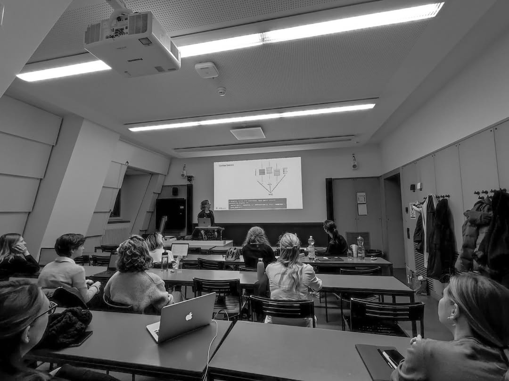

Luisa Barbanti, organizer of R-Ladies Zurich, recently spoke with the R Consortium about building and sustaining a technically focused R community in Switzerland. With a background in biostatistics and professional experience at a data science consultancy, Luisa shared how she utilizes R for data wrangling, statistical modeling, and internal tooling, leveraging Quarto and Shiny. She discussed the evolution of R-Ladies Zurich and highlighted the challenges of maintaining momentum as community members transition through different phases of their careers.
What industry are you currently in? How do you use R in your work?
I work at a data science consultancy where we primarily use R for all our projects. This includes data cleaning, producing graphs, and extracting relevant insights through modelling.
We often work with large datasets and develop reporting tools using Markdown and Quarto to create presentations, even when they don’t involve R. However, when we do want to incorporate R elements, we can do so in a flexible manner.
Furthermore, we have an entire ecosystem of Shiny apps for internal use. For example, we have a system for tracking timesheets, where we collect the hours worked on various projects, along with the corresponding job codes. This data is automatically gathered and helps us produce invoices, as we can easily see how many hours each person has worked on specific tasks.
While we are strong proponents of using R, this approach may be more of an exception than the norm. Nonetheless, R offers numerous capabilities that enable us to accomplish a wide range of tasks. Everything we do typically starts in RStudio, from which we work on various projects.

How has the local community responded to your events, and what strategies have helped you grow participation?
It’s been a positive journey for me and Seraphina, the co-founder of R-Ladies Zurich. During the early stages, I was deeply immersed in my PhD studies, which connected me with many individuals who used R. Meanwhile, Seraphina was working at a company that also utilized R and maintained ties to academia. This connection proved beneficial, as I was able to book university rooms for free, which helped us secure a venue for our events when we had limited funds.
Initially, we relied on our networks to attract attendees to our events. As we began, people we knew showed interest, and gradually, we opened our events to newcomers. Platforms like LinkedIn and Instagram played a significant role in this growth. A friend of Seraphina, Tieu Khe, who specializes in marketing, helped us by creating a beautiful corporate identity for R-Ladies Zurich, which we still use today. This corporate identity has significantly enhanced our online visibility, enabling more people to discover us and participate in our events.
Meetup has been crucial in this process; without it, many people wouldn’t be aware of our events. The platform notifies users via email about our upcoming gatherings, and we’ve seen numerous new attendees as a result. While many regulars continue to participate, we understand that people’s interests can shift, especially when they change fields or jobs, which may lead them to stop using R and consequently not attend our events.
As for our upcoming events, we currently don’t have any specific ones lined up. However, we’re considering a joint event with the Zurich R User Group. Traditionally, we focus on interactive formats rather than frontal presentations, aiming to engage participants directly and encourage them to take an active role and get involved.
Organizing these events requires considerable effort, and we’re currently facing a shortage of presenters. We do have one potential presenter in the pipeline, but the timeline remains uncertain. We have discussed collaborating with the Zurich R User Group to develop a workshop format for a larger audience, likely targeting the fall. Although we haven’t set a specific date yet, we anticipate being able to coordinate something after everyone returns from their summer vacations.

R-Ladies Zurich Co-hosted Panel Discussion with the Zurich R User Group on International Women’s Day 2024
What have been the key challenges and lessons in organizing R-Ladies Zurich over the past four years?
This is the fourth year we’ve been involved with this project, having started the chapter and managed it. We’re trying to figure out how to maintain some continuity, which has been one of our biggest challenges. People change, and their careers evolve. For instance, I still use R, but Céline, co-organiser of R-Ladies Zurich, is no longer using it.
So, we’re considering how to sustain the community as people shift and change. Currently, we find ourselves in a transitional phase, attempting to define what this space represents. We have a Meetup group, but organizing events requires a lot of work, from finding locations to managing logistics. It’s becoming increasingly complex for me, especially since I’m no longer at the university.
This situation may not be the most exciting news, but it’s an essential reality that every chapter faces: transitions and changes. Currently, we aren’t conducting online events. Otherwise, I would suggest that people follow us online. If you’re visiting Zurich and would like to connect, please don’t hesitate to reach out. It’s very easy to get in touch, and there’s a welcoming community here. Although R remains significant, it’s essential to acknowledge that many other programming languages also play a crucial role in keeping this community alive.
How do I Build an R User Group?
R Consortium’s R User Group and Small Conference Support Program (RUGS) provides grants to help R groups organize, share information, and support each other worldwide. We have given grants over the past four years, encompassing over 82,000 members in close to 100 user groups in 41 countries. We would like to include you! Cash grants and meetup.com accounts are awarded based on the intended use of the funds and the amount of money available to distribute